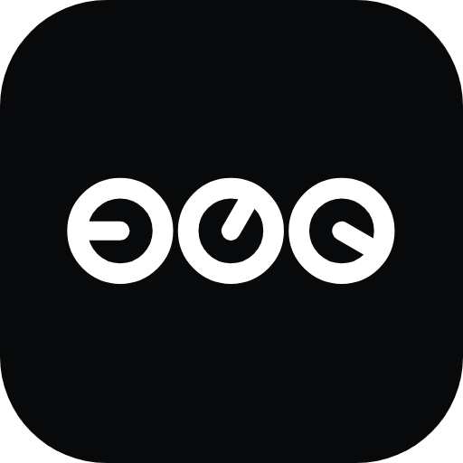
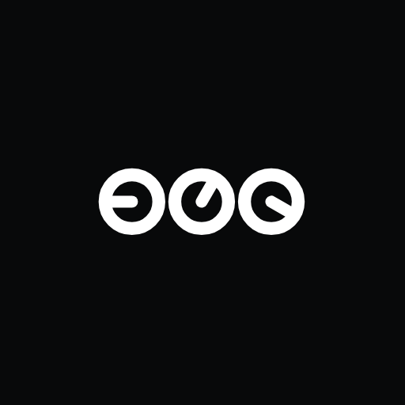
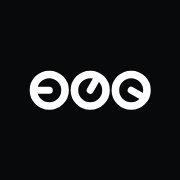
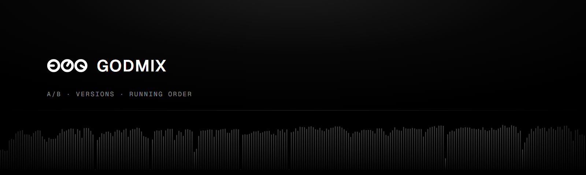
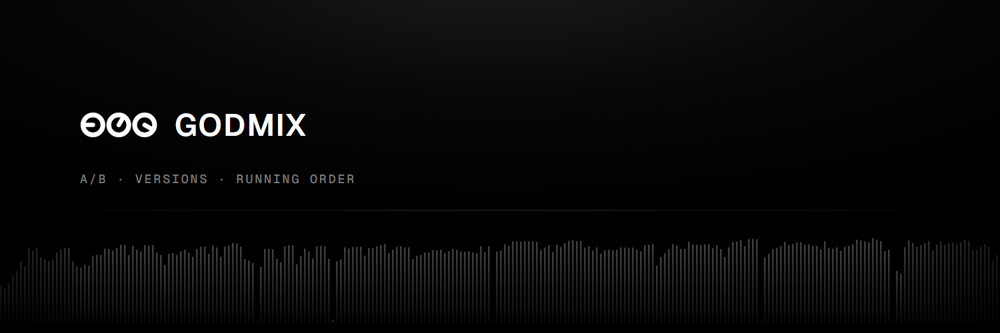
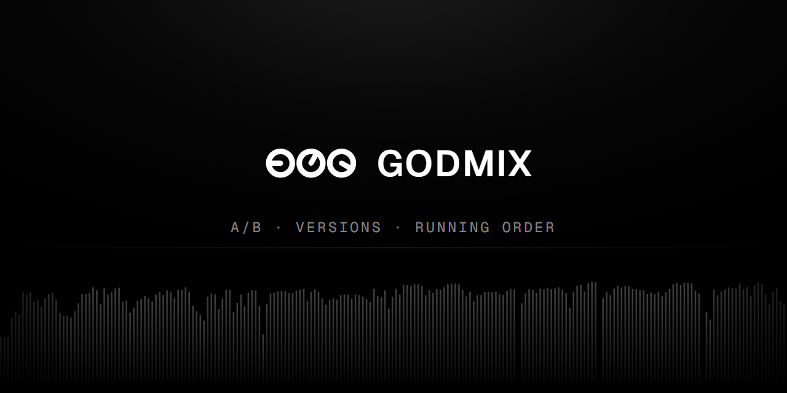
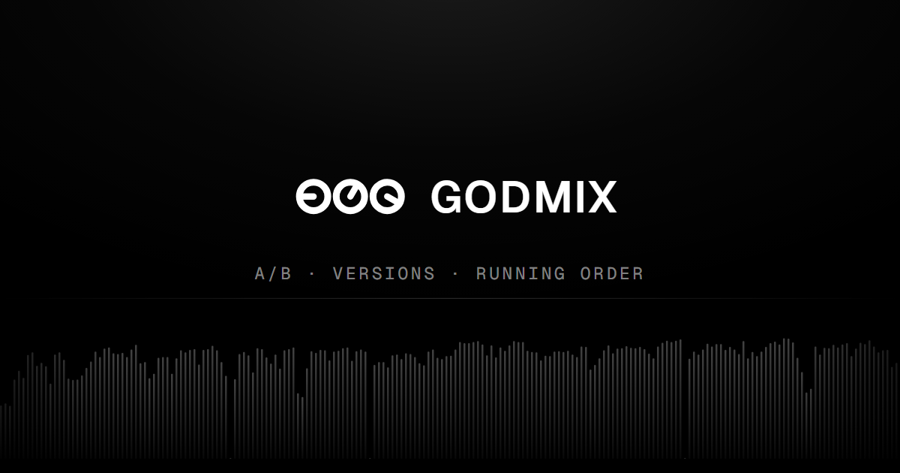

The mark is stems.fm mark 136, Three dials: three knobs at three settings, like the controls GODMIX gives you over one album. The app uses the all-white mark; the toned version is the stems.fm look. Everything here is drawn by design/brand.mjs and rendered by node design/build.mjs.
White for the app and anything on black. Toned (one ink at 100, 70 and 45 percent) where it sits beside stems.fm. Black on light backgrounds.

Mark and wordmark, set in Geist SemiBold with 4% tracking. Leave at least the height of one dial clear on every side.
The white mark on a black rounded tile, so it reads on light and dark tabs alike. The maskable icon keeps the dials inside the safe zone.



Black, a soft light from above, and an album’s loudness along the bottom: on stems.fm the only colour comes from the music itself.




One off-white ink on black, from stems.fm. Surfaces step up in small increments; borders are the ink at 9–22%. Green, amber and red are only for status. Tokens live in app/web/css/tokens.css.
Geist for words, Geist Mono for numbers, times and labels. Tight tracking on headings; 13 px for interface text.
Off, a little, most of the way: left to right. Don’t rotate, mirror or recolour single dials.
16 px wide on screen for the mark alone; use the tile icon below that.
The interface stays monochrome. Use waveforms and loudness curves, not decoration.